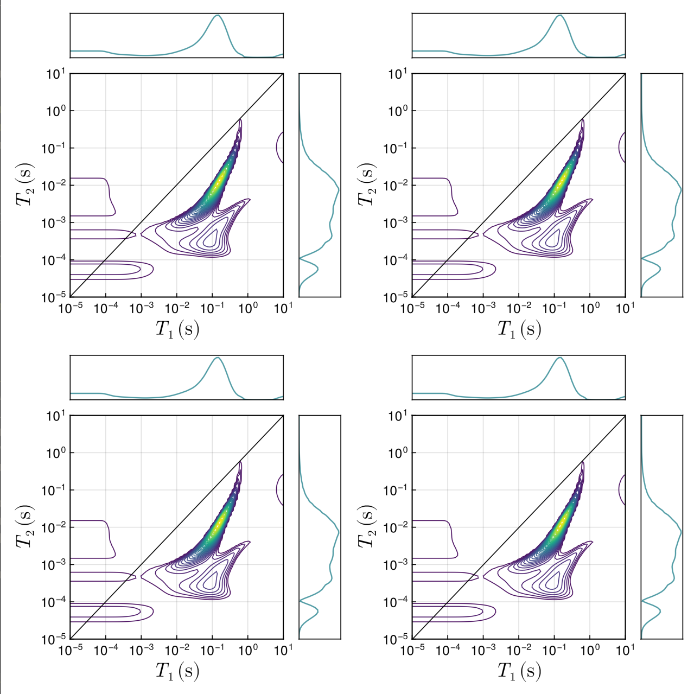

This page will give you a basic idea about how to use the NMRInversions package. For more details, it's best to refer to the functions page.
All of the commands mentioned below should be typed in the julia console, or saved in a text file with the .jl extension, to be used from a terminal with julia file.jl, or through an IDE such as VSCode.
Performing an inversion
Suppose we're working with data coming from a Spinsolve instrument Then we can do the following:
(you can find some example data in the files of this package, look at the github page for the example_data folder).
using NMRInversions
data = import_spinsolve()Since we called the import_spinsolve function without an argument, it'll open a file dialog for us to select the files we want to import. (note that import_spinsolve requires two files, the aqcu.par file containing aqcuistion parameters, plus the .dat or .csv file containing the experiment data.)
Now we have the data imported, the inversion can be performed using a single line of code!
results = invert(data)The results variable above is an inv_out_1D or inv_out_2D structure, which contains all the relevant information produced by the inversion function. To access that information, we can look at the fields of the structure using the dot notation. The field names contained in the structure can be shown by using the REPL help mode (typing ? at the julia> prompt), and typing the variable's name (in this case, ?results). Alternatively, running @doc results will also give you the same answers.
The results can easily be visualised through the GLMakie extension of the package.
using GLMakie
plot(results)This will open a GUI with tools to interactively extract some information from the inversion results, by selecting regions and labelling them accordingly.
The plot function of GLMakie is modified by this package to work with results from the invert function as arguments. It's really easy to use, but if you want more control on how your plots look, it's best to create them from scratch using all the tools available in GLMakie.
The process above can also be achieved by a single line of code:
using NMRInversions, GLMakie
plot(invert(import_spinsolve()))Note that the workflow above can work for both 1D and 2D inversions!
Examples with plots
This is how some full examples would look like:
using NMRInversions, GLMakie
path = ".../NMRInversions.jl/example_data/csv_files/graphene_CPMG.csv"
data = import_csv(IR, path)
results = invert(data)
plot(results)The resulting plot will look like:
Notice that benath the $T_2$ distribution there's a slider. You can move the ends of it to select a region within the limits defined by the red veritical lines. Then you can use the following options:
Label current selectionwill highlight the selected region and add some text in the plot with the weighed average $T_2$ of that region.Filter-out selectionwill remove the selected region from the distribution, and it will update the fit and the residuals accordingly on the plot.Reset selectionsgets you back where you started, removes any selections and brings back filtered-out regions.Change y scalewill change the 1st plot from linear scale to log scale and back. Only works if there are no negative values (so it will not work for inversion recovery data).Save and exitwill bring up a window so that you can save your plot as a .png (without the buttons and the slider).
Let's look at a 2D example as well:
using NMRInversions, GLMakie
paths = [".../NMRInversions.jl/example_data/spinsolve_IRCPMG/T1IRT2.dat",
".../NMRInversions.jl/example_data/spinsolve_IRCPMG/aqcu.par"]
data = import_spinsolve(paths)
results = invert(data)
plot(results)
Similarly, now we can select regions by left-clicking at points within the plot which enclose a region of interest. Then, we can :
Label current selectionwill highlight the selected polygon with a dashed line and add some text in the plot with the weighed average $T_1/T_2$ of that region, as well as the volume fraction of it.Filter-out selectionwill remove everything inside the selection polygon.Cancel current selectionwill discard the current polygon in case you do not like what you selected.Reset selectionwill remove all the selections you made.Reset filterwill undo anything you filtered-out.Save and exitwill bring up a window so that you can save your plot as a .png (without the buttons).
There are also some options to change the appearance of the plot, in terms of colormap, contour levels and toggling between filled and non-filled contours. You can also add a title to the plot, which will be saved.
If you have multiple results, you can pass them as a matrix or vector into the plot() function as:
plot([results results ; results results])
Of course, it would be more interesting if it wasn't four copies of the same results, but you get the point.
Using the expfit function
In a similar way, we can perform various exponential fits with the imported data using the expfit function.
using NMRInversions, GLMakie
path = ".../NMRInversions.jl/example_data/csv_files/Chesire_sandstone_IR.csv"
data = import_csv(IR, path)
a = expfit(1, data) # mono-exponential fit
b = expfit(2, data) # bi-exponential fit
plot(a,b) # Visualize both on the same plotOf course, these fits are not very good, that's why we'd use inversions instead.